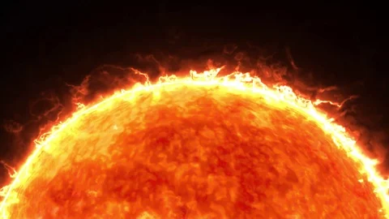

The Sun is the star at the center of the Solar System. It is a nearly perfect sphere of hot plasma, heated to incandescence by nuclear fusion reactions in its core, radiating the energy mainly as light, ultraviolet, and infrared radiation. It is by far the most important source of energy for life on Earth.
Click the button below to see how far we are from home with different modes of transportation: